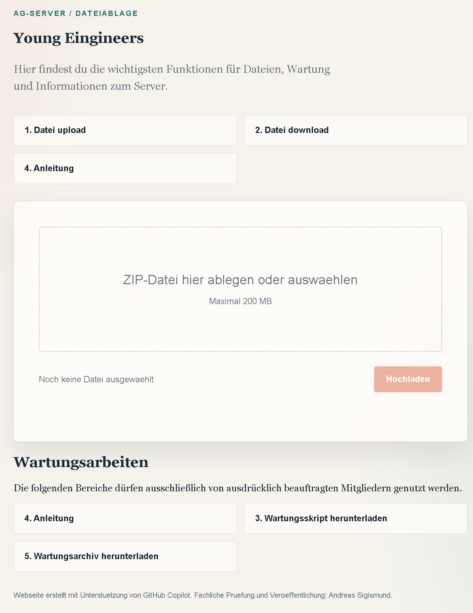

Webserver Startseite
Der Aufruf erfolgt im Webbrowser in der Regel über die URL http://10.50.1.11:8000/.
Diese Seite stellt den Up- und Download von Dateien bis 200 MByte bereit.
Sie kann von den Mitgliedern der AGs Minecraft und Young Engineers während der AG-Zeiten genutzt werden.
Der Bereich Wartungsarbeiten darf auf Anweisung autorisierter Mitglieder geneutzt werden.
